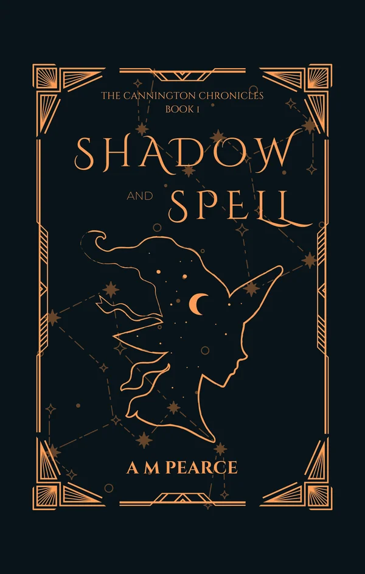

BOOK 1
Shadow and Spell
One night. One game. The future at stake.
Once a foundling, Gwen now lives a quiet life in the idyllic English countryside, raised by two loving mothers. But a local café once known for its average coffee and disappointing pastries is suddenly luring customers from all over the country.
When Gwen investigates, she finds a new barista who's taking more than just customers' money.